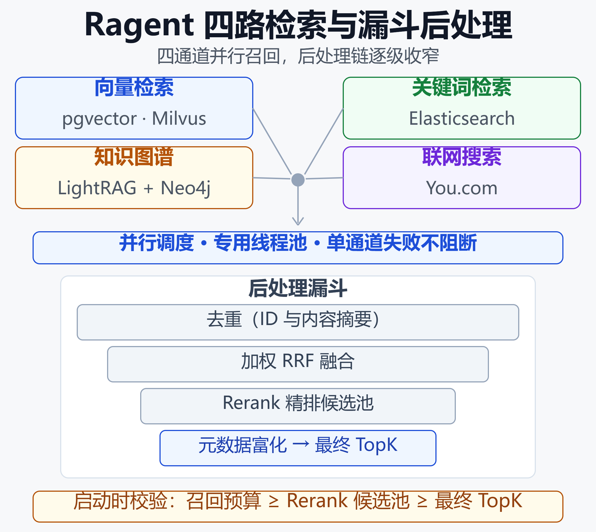
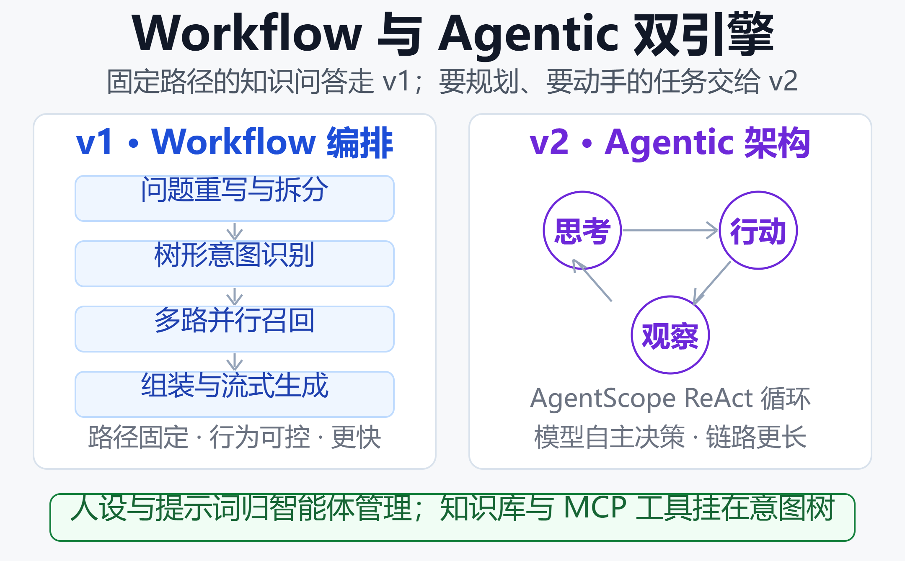

从 Workflow 到 Agentic 双引擎：Ragent 给 Java 开发者的 RAG 落地参考
2025 年 11 月 20 日，一个名为 ragent 的 Java 仓库在 GitHub 上创建。到 2026 年 11 月下旬，它累积了 4492 个 Star 和 927 次 Fork，最近一次代码提交停在四天前——这不是一波营销冲出来的数字，而是仍在活跃迭代中的工程。
仓库属于「拿个offer」，一个面向 Java 开发者的项目实战社群，主理人是自称"不是在造轮子，就是在造轮子路上"的程序员马丁。此前的 12306 购票系统开源后收获超过 1.5 万 Star，Ragent 是这个社群在 AI 领域的第一站。
RAG 开源生态长期由 Python 主导：LangChain、LlamaIndex、Dify、RAGFlow，清一色 Python 或 Python 内核。Java 开发者想找一套能逐行读、能断点调试、又按企业标准构建的 Agentic RAG 参考实现，选择一直很少。
Ragent 填的就是这个空档。它的定位写得很直白：企业级 Agentic RAG 智能体，全链路覆盖文档解析、多路检索、意图识别、问题重写、会话记忆、MCP 工具调用与深度思考，口号是"拒绝 Demo 玩具"。
一、基本盘：一年 4492 Star 意味着什么
先看硬数据（截至 2026 年 11 月 22 日，GitHub API 口径）：
- 4492 Star、927 Fork，仓库 2025 年 11 月 20 日创建
- v1.0.0 发布于 2026 年 6 月，v1.1.0 发布于 2026 年 8 月
- 主语言 Java（约 4.4MB 源码），前端 TypeScript + React 18
- Apache-2.0 协议，代码全量开源
- 配套文档站 120 页教程，部分进阶章节为社群付费内容
在 Java 圈，一年 4500 Star 是个不低的速度。对一个出自求职社群、主题又落在"Python 主场"的 RAG 项目来说，这个数字说明需求真实存在：大量 Java 开发者需要在简历和面试里聊 AI，而现成的 Java 参考实现太少。
项目官网还公布了一组代码规模数据（自报口径，含注释与空行）：
| 维度 | 数据 |
|---|---|
| Java 主代码 | 约 5.6 万行 |
| 主代码文件 | 553 个 |
| 业务表 | 22 张 |
| 测试点 | 84 个 |
定位上需要区分清楚：Ragent 不是 Dify、FastGPT 那类低代码平台，没有拖拽编排界面。它是源码级工程参考，面向要读懂每一行、再基于它做二次开发的工程师。两类形态怎么选，可以参考此前对 Dify vs Coze vs RAGFlow vs N8N vs FastGPT：2026年低代码AI平台深度对比 - AI知识宇宙 - 用AI采集，用AI生成 的横评。
二、七模块架构：把供应商差异关进基础设施
Ragent 采用前后端分离的模块化单体架构，后端按职责拆成七个 Maven 模块：
| 模块 | 职责 |
|---|---|
| infra-ai | 模型客户端与容错路由 |
| system | 认证与审计日志 |
| rag | 问答、知识库、检索 |
| agent | ReAct 引擎与工具 |
| framework | 响应、幂等、MQ、SSE |
| bootstrap | 启动装配 |
| mcp-server | MCP 工具示例服务 |
这套分层的意图很明确：把业务编排、AI 供应商差异和通用基础设施隔离开。切换模型、向量库或对象存储时，核心问答流程不需要跟着重写。
技术栈上，v1 时代的官网口径是 Java 17 + Spring Boot 3.5.7 + MyBatis Plus；GitHub 最新文档已提到 Spring Boot 4 与 React 18 前端。存储组合以 PostgreSQL 为核心：默认用 pgvector 做向量检索，Milvus 2.6 可选替换。
关键词走 Elasticsearch、知识图谱走 LightRAG + Neo4j，两者都是可选通道；RocketMQ 5.x 承担异步任务，Apache Tika 3.2 负责文档解析，模型侧对接百炼、SiliconFlow、AIHubMix 与 Ollama。
默认选 pgvector 而非独立向量数据库，是一个克制的选择。向量库选型的完整权衡，可参考 2026 开源向量库全景对比：Milvus、Qdrant、Weaviate、pgvector 到底怎么选。
三、检索：四路并行召回与漏斗式后处理
检索是 Ragent 着墨最重的部分，也是它区别于 Demo 项目的主要证据。当前提供四类检索通道，按配置启用后并行执行：
- 向量检索：pgvector 或 Milvus
- 关键词检索：Elasticsearch
- 知识图谱：LightRAG + Neo4j
- 联网搜索：You.com
每个通道独立执行、互不影响，通过专用线程池并行调度。单通道失败不阻断主链路，这是生产系统的基本要求。
后处理链依次完成去重、加权 RRF 融合、Rerank 和元数据富化。检索规模按"召回预算 → Rerank 候选池 → 最终 TopK"三段配置，并在启动时校验漏斗不变式——配置错误直接启动失败，而不是静默降质。

整条链路的关键在"漏斗"二字：召回预算、Rerank 候选池、最终 TopK 三段规模逐级收窄，任何一段配置失衡都会在启动阶段被拦下，而不是带病运行。
为什么坚持多路混合？纯向量检索对精确匹配很弱，用户问一个订单号，向量检索可能完全找不到；纯关键词又理解不了"打印机墨盒怎么换"和"墨盒更换步骤"是一回事。
混合检索的原理与规模效应，此前在 BM25 没有过时，反而在大规模 RAG 里赢了：原理、混合检索与最新规模研究 一文里有展开。
图谱一路的成本考量则可对照 你真的需要 GraphRAG 吗？微软开源方案的原理、成本与选型指南（2026）——Ragent 把图谱做成可选通道而非必选项，思路一致。
问题理解侧，检索之前还有三道工序：查询词映射、问题重写与拆分、树形意图识别。多轮对话里用户说"怎么申请"，系统先补全上下文再检索；复杂问题拆成多个子问题分别召回。
意图树支持多级意图并关联多个知识库，置信度不足时主动引导用户澄清，而不是硬猜一个答案。这一层是很多 Demo 项目完全缺失的"检索前智能"。
四、v1 与 v2：Workflow 和 Agentic 双引擎并存
Ragent 最有叙事价值的设计，是同时保留了两代架构，且明确说"两套并存，不是谁替代谁"。
v1 是 Workflow 编排。路径写死在代码里：问题重写、意图识别、多路召回、组装生成，一步接一步走完。路径固定意味着行为可控、链路更短，适合问答类知识助手这种需求明确的场景。
v2 是 Agentic 架构。路径由模型自己定：知识检索、MCP 工具和 Skills 技能都变成模型手里的工具，查不查、查几次、查完接着干什么，在 ReAct 循环里边推理边决定。链路比 v1 长，也不再是一条直线。

两套引擎共享同一套基础设施，但决策权完全不同：v1 的每一步都由代码编排，v2 的每一步都由模型在 ReAct 循环里临场决定。
这个"固定路径 vs 模型自主"的双轨判断，与行业从对话式产品转向 Agent 的大方向相呼应，参见 从LLM到Agent的范式跃迁2026：OpenAI「去聊天化」背后，整个行业在押注什么。
v2 的 ReAct 引擎：AgentScope 只用了一小半
v2 的 ReAct 循环没有完全手写，而是基于阿里的 AgentScope Java 版（agentscope-core 2.0.2）构建。框架负责推理、工具分发、状态读写和事件流这些循环骨架，Ragent 在 Builder 上挂了七层自定义中间件。
一个耐人寻味的细节：AgentScope 的 ReActAgent.Builder 在 2.0.2 有 38 个方法，剔除废弃入口后剩 28 个有效配置项，Ragent 只用了 8 个。没用框架的三块核心能力，全部自研替代：
- 记忆：框架的 longTermMemory 已标记待删除，改为自研三层体系——上下文裁剪、会话压缩、跨会话长期记忆
- 知识库：框架的 RAG 抽象会抹平证据链信息（来源文档、命中分块、召回通道、检索得分），因此保留自研召回链路，只在外层封装成普通工具暴露给模型
- 技能：不用框架当期 API，采用"技能手册存库、走工具调用按需加载"的自有方案
Agent 记忆的分层设计思路，与 AI Agent 记忆系统全解析：原理拆解、五大开源方案与真实应用场景 梳理的业界方案同属一个谱系。
能力边界：人设归智能体，工具归意图树
Ragent 的 Agent 定义不写在代码里，而在管理控制台中：一个智能体即一份人设加提示词槽位，保存后下次会话即生效，无需发版。产品、运营可以直接查看修改。
但切换智能体只换人设与提示词，不切能力边界——知识库和 MCP 工具挂在意图树上。人设解决"怎么回答"，意图树解决"能做什么"。
这也意味着 Agent 工厂不能把人设和工具清单当作启动时的静态配置，必须在运行期读取最新配置动态构建。配置与代码的边界被重新划分。
五、生产级的证据：熔断、排队与人工确认
"企业级"是容易被滥用的词，判断标准应该是代码里有没有那些只有踩过坑的人才会写的机制。
模型容错。按档位配置多候选模型，首包超时、空响应或异常时自动切换；CLOSED、OPEN、HALF_OPEN 三态熔断隔离故障节点，避免持续调用已经故障的模型。
流量保护。Redis ZSET 实现公平排队，配合 Lua 原子抢占、可过期信号量和 Pub/Sub 唤醒，支持排队进度、超时、取消与许可回收——防止突发请求压垮模型服务。
数据一致性。RocketMQ 事务消息与回查保障分块任务可靠执行，消费与提交幂等，远程文档刷新带分布式锁和状态机。
可观测。AOP 记录 Trace Run/Node 的耗时、输入输出与异常，关键配置变更记录前后快照与字段 Diff。v2 还接入了 Langfuse，可按会话查看模型推理、工具调用、耗时与 Token 消耗——Langfuse 的选型分析见 Langfuse实战：给AI Agent装上黑匣子——开源LLM可观测性平台完全指南。
MCP 与人工确认。mcp-server 是基于 MCP Java SDK 的独立工具服务，内置天气、票务、销售与联网搜索示例；客户端在 agent 模块通过 AgentScope 连接和发现工具。MCP 协议的生态位解析可参考 MCP vs A2A：重塑 AI Agent 生态的两大协议深度解析 - AI知识宇宙 - 用AI采集，用AI生成。
值得单独一提的是写操作人工确认：遇到下单、修改数据等写操作时，系统先展示操作内容和原始参数，用户确认后才继续执行。这是 Agent 从"能回答"走向"能动手"的关键安全机制。
官方文档同时给出了清醒的边界声明：具备生产级机制不等于默认配置可直接上线，正式部署仍需完成密钥托管、网络隔离、容量压测、监控告警等工程动作。
六、不用 Spring AI：一个有争议但自洽的选型
Ragent 最容易引发争论的决策，是 RAG 核心没有用 Spring AI 或 LangChain4j，而是自研了模型客户端层。
官方文档给出的时间背景：项目 2025 年 6 月启动，而 Spring AI 1.0.0 GA 是 2025 年 5 月 20 日，两者只差不到一个月。选型时 Spring AI 刚进入稳定期，尚未经过生产验证。
文档记录了两个具体痛点。一是 API 大幅重构：从 1.0 升到 1.0.x 补丁版本，类结构、接口、包路径全变，"代码大面积爆红"，等同于重写。
二是工具调用 API 静默失效：某次里程碑升级把 tools() 更名为 toolCallbacks()，旧方法不报错、无日志，但工具悄悄不再工作。无异常的隐性故障，比编译报错难排查得多。
自研的代价同样明显：模型客户端、检索、会话、Trace 全部要自己写，数万行代码里有相当比例是成熟框架本可以替你写掉的部分。收益是演进路径完全可控，以及——对教学场景更重要的——每一层都可以拆开讲清楚。
值得注意的是，Ragent 并没有走向"一切手写"的极端：v2 的 ReAct 循环骨架就大方地交给了 AgentScope。这个组合可以概括为：不稳定的层自研，稳定且难写对的循环用框架。
对面临同样选型的团队，这是一个比"用或不用 Spring AI"更有参考价值的切分方式。框架成熟度会随时间变化，但"哪些层值得自己掌控"的判断框架不会过时。
七、适合谁，怎么用
适合：
- Java 后端开发者，想系统性理解 Agentic RAG 全链路，需要一个能逐行读、能断点调试的参考实现
- 技术栈以 Java/Spring 为主的团队，要自建知识库问答或智能体，希望有源码级起点而非黑盒平台
- 准备校招或社招的 Java 求职者，需要简历上有区分度的 AI 项目——这本来就是项目的目标场景
不适合：
- 想要开箱即用、拖拽搭建的低代码体验，更适合 Dify、FastGPT 一类平台，参见 用 FastGPT 搭企业知识库：能力边界、部署形态与合规细节全梳理
- Python 团队——LangChain、LlamaIndex 生态的资料密度仍然高一个量级
- 期望 clone 下来直接投产的场景：官方明确默认配置不可直接上线
学习成本上，代码完全开源，配套 120 页文档中基础部分免费，进阶部分（如工具调用设计实现）为社群付费内容。是否为深度内容付费，取决于自学源码的时间成本。
小结
Ragent 的价值不在"又一个 RAG 项目"，而在它把 Python 生态里已经相对标准化的 Agentic RAG 工程实践，完整翻译成了 Java/Spring 的语言。
四路混合检索、意图树、三态熔断、公平排队、事务消息、写操作人工确认、Langfuse 观测——每一项都对应生产环境里的真实问题，而不是简历关键词的堆砌。一年 4492 Star 说明这个翻译有受众。
对 Java 开发者，它是目前少有的"能跑起来、能断点调试、敢全部摊开"的 Agentic RAG 源码参考；对行业观察者，它提供了 Java 阵营回应 AI 浪潮的一个样本。框架选型的争议见仁见智，但"每一层都能拆开讲清楚"本身，就是工程教育里稀缺的品质。
免责声明：本文基于公开资料整理，Star 与仓库数据来自 GitHub API（2026 年 11 月 22 日查询），"5.6 万行代码"等为项目官网自报口径（含注释与空行）。本文不构成任何付费社群的购买建议，也不构成技术选型的唯一依据。
参考来源
- GitHub —— nageoffer/ragent 仓库
- 拿个offer —— Ragent AI 系统概述
- 拿个offer —— 为什么不用 Spring AI / LangChain4j
- 拿个offer —— AgentScope 集成与 ReAct 循环
- 拿个offer —— 社群官网
相关阅读
- Dify vs Coze vs RAGFlow vs N8N vs FastGPT：2026年低代码AI平台深度对比 - AI知识宇宙 - 用AI采集，用AI生成
- BM25 没有过时，反而在大规模 RAG 里赢了：原理、混合检索与最新规模研究
- AI Agent 记忆系统全解析：原理拆解、五大开源方案与真实应用场景
- Langfuse实战：给AI Agent装上黑匣子——开源LLM可观测性平台完全指南
- OpenHands 深度调研：从 OpenDevin 到 80K Star 开源编程 Agent 的两年进化
推荐搭配装备
善其事，利其器。以下硬件能最大化你的AI体验👇
🔗 通过以上链接购买可支持本站持续运营 🙏